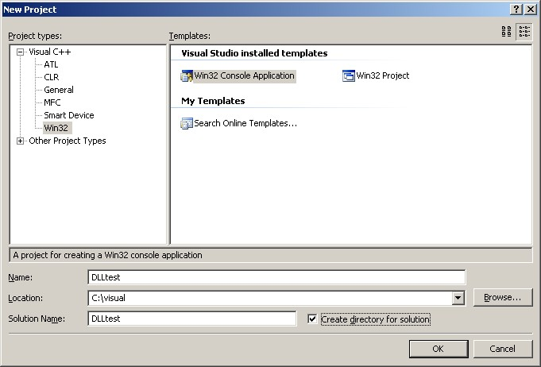
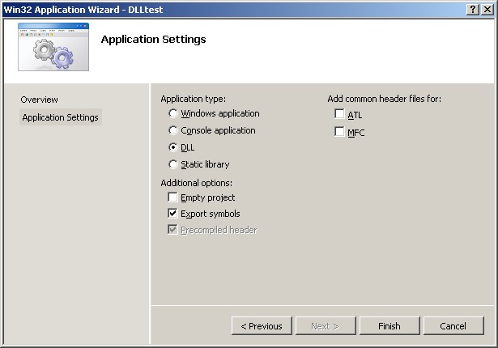
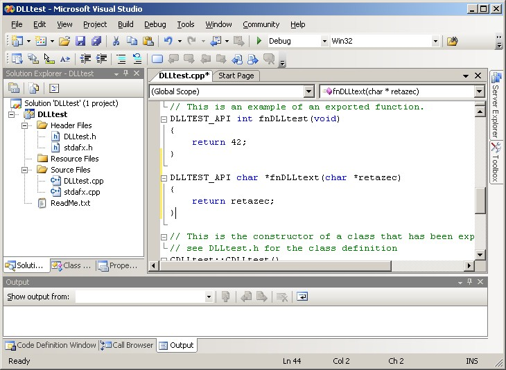
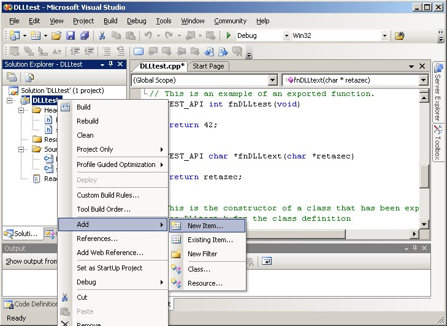
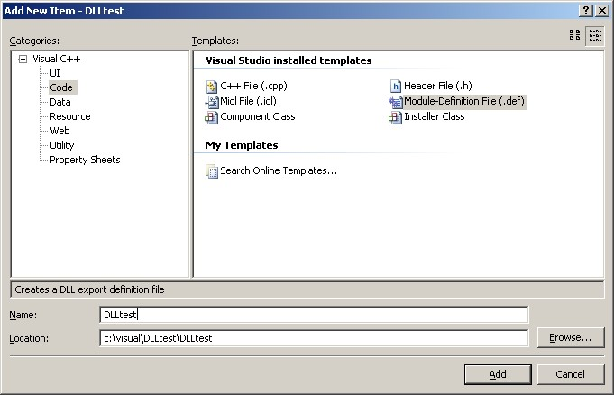
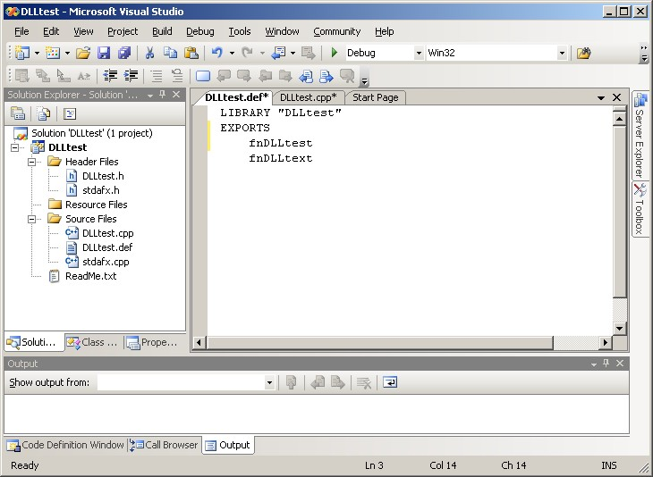
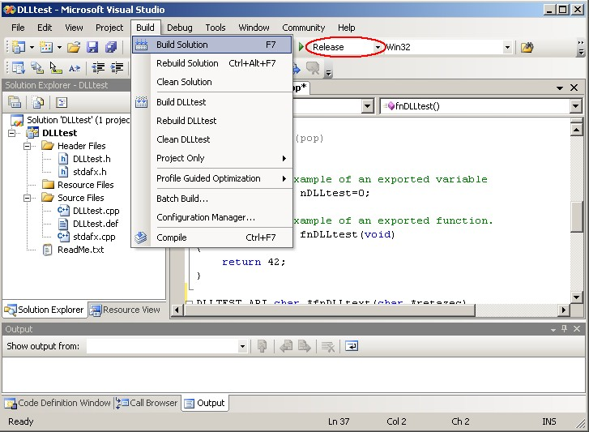

Slovak
SlovakVyvíjate aplikácie v Turbo Delphi? Stalo sa vám už, že ste chceli v niektorej z nich použiť knižnicu, ktorá poskytovala rozhranie iba pre jazyk C? Hľadali ste na internete prepis hlavičkových súborov tejto knižnice použiteľný v Delphi, no vaša snaha bola márna? Ak ste aspoň na dve z predchádzajúcich otázok odpovedali kladne, je tento článok určený práve pre vás. Predstavuje spôsob, ako napísať časť programu v jazyku C a použiť ju v Delphi.
Úvod
Jednou z hlavných úloh tohto článku je názorne predviesť, ako v prostredí Microsoft Visual Studio 2005 Professional vytvoriť dynamicky linkovanú knižnicu (DLL súbor), ktorá exportuje funkcie obsahujúce potrebný kód napísaný v jazyku C a ako ju následne pripojiť k projektu vyvíjanému v Turbo Delphi.
Vytvorenie DLL knižnice vo Visual C++
Vo Visual Studiu zvoľte možnosť založiť nový projekt pomocou menu “File > New > Project”.
V okne “Project Types” vyberte voľbu “Visual C++ > Win32 > Win32 Console Application” a zvoľte názov projektu DLLtest.

V nasledujúcom okne s názvom “Win32 Application Wizard” zvoľte “Application Type: DLL” a “Additional options: Export symbols”.

Visual Studio vygeneruje súbor DLLtest.cpp, v ktorom sa nachádza ukážková funkcia fnDLLtest:
DLLTEST_API int fnDLLtest(void)
{
return 42;
}
Dopíšte pod ňu vlastnú funkciu fnDLLtext pracujúcu s reťazcami:
DLLTEST_API char * fnDLLtext(char * retazec)
{
return retazec;
}

V paneli “Solution Explorer” kliknite pravým tlačidlom myši na váš projekt a z kontextového menu vyberte voľbu “Add > New item”.

V okne “Add New Item - DLLtest” vyberte voľbu “Visual C++ > Code > Module-Definition File (.def)” a ako názov nového súboru zadajte DLLtest.

Upravte čerstvo pridaný súbor DLLtest.def tak, aby obsahoval mená exportovaných funkcií:
LIBRARY "DLLtest"
EXPORTS
fnDLLtest
fnDLLtext

Výberom z rolovacieho menu “Solution Configurations” na paneli “Standard toolbar” zmeňte profil z “Debug” na “Release” a skompilujte knižnicu pomocou menu “BUILD > Build solution”.

V adresári projektu by sa mal nachádzať podadresár release obsahujúci výslednú knižnicu DLLtest.dll.
Volanie funkcií z DLL v Borland Delphi
Prekopírujte knižnicu DLLtest.dll priamo do adresára vášho delphi projektu.
Za deklaráciou funkcií z knižnice použite klauzuly cdecl a external.
Nasledujúci jednoduchý program demonštruje použitie funkcií exportovaných DLL knižnicou vytvorenou podla tohto článku:
program Project1;
{$APPTYPE CONSOLE}
uses
SysUtils;
function fnDLLtest() : integer; cdecl; external 'DLLtest.dll';
function fnDLLtext(retazec : pchar) : pchar; cdecl; external 'DLLtest.dll';
begin
writeln('Vystup funkcie vracajucej integer: ' + IntToStr( fnDLLtest() ));
writeln('Vystup funkcie vracajucej "string": ' + fnDLLtext( Pchar('ahoj') ));
readln;
end.
Záver
Za nevýhodu tohto riešenia sa dá označiť fakt, že spolu s finálnou verziou vašej aplikácie musíte distribuovať aj balík Microsoft Visual C++ 2005 Redistributable Package, bez ktorého bude vytvorená DLL knižnica nepoužiteľná. Ak teda máte dostatok času a skúseností, môže byť vhodnejším riešením prepísať hlavičkové súbory spomínanej knižnice z jazyka C do jazyka Object Pascal, alebo celú aplikáciu vyvíjať v Turbo C++.